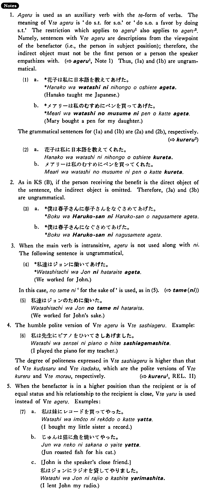

←
DoJG
→
あげる (2)
(B. 65)
Example sentences
(ksa).
私は信男さんにネクタイを買って
あげた・あげました
。
I bought a tie for Nobuo.
(ksb).
僕は春子さんを慰めて
あげた・あげました
。
I consoled Haruko.
(a).
君はお母さんに何をして
あげました
か。
What did you do for your mother?
(b).
田中さんはスミスさんに本を貸して
あげた
。
Mr. Tanaka lent a book to Mr. Smith.
Formation
Vて
あげる
話して
あげる
talk for someone’s sake
食べて
あげる
eat for someone’s sake
